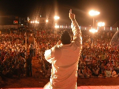

Como atea, siempre he sentido que camino en cuclillas, sobre la preocupación de lo que pueda despertar este hecho en mi interlocutor. Igual que el homosexual en el ejército, recurro al silencio para nadar mejor dentro de la intolerancia disfrazada de ofensa, donde los dardos lanzados no pasarían la prueba frente al propio lanzador.
Entre mis pasos existe siempre una disculpa por no creer e inagotables razones se quedan en pensamientos mientras permito, respetuosamente, que los demás hablen libremente sobre sus dioses y doctrinas.
Y es que descartar la religión en un mundo esencialmente creyente no es poca cosa; hay que estar bien preparado para justificar la “herejía” frente a todos, hasta los más cercanos. Es allí donde inicia su camino la intolerancia y yo, en mi condición de mujer nacida y criada en el tercer mundo, he desarrollado un buen radar para detectar discriminaciones.
Los que me conocen saben que disfruto de la ciencia, el periodismo científico no es sólo mi trabajo sino también mi pasión, me angustio ante noticias sensacionalistas (al estilo Muy Interesante) que echan por el suelo el elegante trabajo que realizan los investigadores. Como afirmó elocuentemente Richard Dawkins (sí, él otra vez) durante el documental “Enemigos de la razón”: “la ciencia es la poesía de la realidad”; es precisamente por comentarios así que lo cito tanto.
Que los humanos hayamos desarrollado herramientas para conocernos como especie y al mundo que habitamos, es lo que me impulsa a escribir columnas como éstas. No obstante, la investigación científica es un imán para los aclamadores de dioses. Inevitablemente, si es usted un seguidor fiel de escrituras sagradas, es posible que no esté de acuerdo con gran parte del desarrollo científico. Creo que esas personas que toman sus escritos divinos con fidelidad fundamentalista deberían de optar por vivir estilos de vida mucho más radicales y apartarse, no sólo de lo que supuestamente es pecado (algo imposible para cierta mayoría), sino también de todo el desarrollo científico cuyas conjeturas contradigan las explicaciones en sus libros: desde el uso de los fotones que se desprenden de cada bombillo en su hogar hasta las vacunas que salvan la vida de millones y cuyas gotas dejamos correr por la garganta de nuestros hijos.

Pero es curioso como las personas adecúan sus pensamientos por más contradictorios que éstos sean (¿recuerdan el hemisferio intérprete?). El conjunto de esos avances científicos integrados a la vida moderna (casi todo, realmente), es aceptado, asimilado y utilizado sin reparar en el conocimiento que lo hace posible. Es plausible aceptar la terapia genética sin relacionar que esos mismos discernimientos sobre la molécula del ADN que la admiten, están vinculados al proceso de la evolución y que compartimos porcentajes variados de ella con los demás animales. Estas implicaciones, sin embargo, pueden ser pasadas por alto, objetadas y rechazadas por las mismas personas que aceptarán la terapia para salvar sus vidas.
Y ni hablar de cuando un científico mete la pata. No sólo se convierte en el microbio que pudre las demás manzanas en el canasto, sino que se intenta desmentir todo lo demás. Precisamente por ello, la ciencia misma se mide con un sinnúmero de autorestricciones; si no fuera así no hubiese forma alguna de diferenciar lo que tiene validez científica de lo que no la tiene. Por ejemplo, si emito una opinión basada en experimentos, la gente pregunta enseguida ¿cómo saben eso?, ¿cómo lo descubrieron?, ¿y qué pruebas tienen? Necesariamente, los investigadores están obligados a realizar experimentos a “doble-ciego”, introducir el efecto placebo en sus resultados y luego enviarlo a un consorcio de colegas elegido por otros investigadores, para que lo revisen. Todo esto con el propósito de filtrar errores, producir evidencias confiables, desenmascarar estadísticas que vayan más allá de la pura circunstancia y desentrañar la realidad de la experiencia puramente subjetiva. Aún así se cometen errores.
Ahora bien, las creencias religiosas no pueden ser sujetas a observaciones bajo ese mismo microscopio detallista que usamos para la ciencia; al final de las observaciones, únicamente encontraríamos respuestas basadas en la fe, en la experiencia subjetiva de los que creen, todo lo demás se cae bajo la lupa científica. Los escritos en los libros sagrados contradicen la explicación que poseemos hasta el momento sobre el Universo y la evolución de la vida sobre la Tierra. Estará en cada creyente encontrar su forma de enmendar estas contradicciones. En este sentido, mucha gente estructura rutas paralelas entre sus creencias y la ciencia.
Muy bien, digo yo, perfecto.
Pero la religión, por naturaleza, es impositiva y predicativa. Un sinnúmero de religiosos desea interceptar los caminos, convertir, no sólo a los ateos, agnósticos y demás ovejas descarriadas, sino también a los creyentes de otras religiones (aquí en mi país, testigos de Jehová, evangélicos y mormones han desarrollado una acelerada y extendida estrategia de reclutamiento), para atraerlos hacia una nueva verdad con interpretaciones recientes del mismo viejo versículo y que se den cuenta que han estado venerando a su dios de la forma equivocada.
El otro día, a raíz de la muerte de Michael Jackson, alguien en la oficina expresó que el espíritu de la celebridad ahora estaba en un proceso complejo hacia cierto estado que, según pude interpretar, se asemeja a esas nuevas ideas que tienen los creyentes liberales sobre el cielo.
Pregunté, esta vez en voz alta, ¿y cómo es que sabes eso?
Pero la respuesta a esa pregunta cambia de acuerdo con el libro que adores, la cultura que te haya acogido, los padres que te hayan criado, los caminos distintos que hayan tomado tus neuronas y hasta tu edad. De hecho, he escuchado y leído tantas versiones sobre lo que pasa después de la muerte que responder: “la verdad es que no sé, aunque deduzco que nada”, me regala una apacible satisfacción que sólo yo disfruto.
Hay una infinidad de cosas que desconozco, no por ello voy a darle la explicación que más me satisfaga, tampoco se me ocurre la más extraordinaria y difícil de explicar, prefiero esperar a que lo resolvamos con las herramientas que hasta el momento poseemos. ¿Qué hay de malo en eso?

En las últimas semanas, he leído las críticas de varios teólogos hacia el Nuevo Ateísmo (y los nuevos ateos), ese que discute sin miedo en vez de pedir disculpas por no creer. El ateo que aboga por un mundo donde la religión se mantenga en los lugares más apropiados: los hogares creyentes, las iglesias y los templos; fuera del gobierno, de las leyes y de la educación pública. Es un paso enorme frente a mi forma apologética de no creer y no puedo negar que me gusta. A todos nos gusta descubrir grupos que hablen nuestro idioma y nos dejen ser, sin disculpas ni justificaciones: si yo respeto, ¿por qué no exigirlo también?

Pero en el mundo de los humanos las cosas nunca son tan simples. La religión organizada tiene poder, poder para interferir en las leyes e imponer sus pensamientos sobre mi vida y mis decisiones. La religión predica y exige una moral que ni siquiera sus propios miembros pueden seguir y, obstaculiza, con historias absurdas sobre el mundo, lo que hemos logrado descubrir hasta el momento. Que mi vecino le enseñe a su hijo que el mundo fue creado en seis días y uno fue usado para descansar (o cualquiera que sea su versión), no es, en mi opinión, mi problema, el conflicto para mí inicia cuando esa misma opinión es expresada por la profesora del mío en el colegio.
Hagamos una pequeña prueba. Imagine que, así como ha pasado tantas veces y continúa ocurriendo, una tribu de habilidades superiores invada su ciudad, domine a los gobernantes e imponga rituales distintos, dioses con nombres diferentes y nuevas normas. Que obliguen a todos a rezar oraciones nuevas y enseñen en las escuelas otras verdades escritas en el extraño libro. En un predicamento similar vivimos millones de personas, desde ateos y agnósticos hasta cristianos y musulmanes de distintas denominaciones y en diferentes partes del mundo, ultrajados por no pertenecer a la religión dominante. Si alguna Iglesia (en mi país es todavía la católica) es hermana del Estado, todo el que no pertenezca no puede sentirse gobernado justamente. Si aceptamos la libertad de expresión, no podemos, por lo tanto, permitir que las leyes se basen en interpretaciones específicas de un culto sobre un único libro.
Como ponderaba un amigo una de estas tardes calurosas cuando el anhelo por más libertades y un asomo de justicia le arrebató un suspiro, “sólo un religioso podría enorgullecerse de ‘ser hombre de un solo libro’”.
¿Orgullo ateo?
Ni satánicos ni esnobs

En la actualidad, si usted se identifica como ateo, olvídese de entrar en el mundo de la política latinoamericana y es probable que se sienta empujado a no visitar otros círculos también. Entre muchos, el ateo ofende por su mera presencia; no creer es, o parte de un plan satánico contra dios o simple y sencillamente un gesto de muy mala educación hacia los demás, como si la opción misma debiese ser abolida.
Nunca he partido de la premisa de que el creyente es menos inteligente ni perspicaz tampoco pienso que sea más bondadoso ni tolerante, esas cosas se evalúan individualmente; no suelo deliberar que aquel que cree en seres sobrenaturales es necesariamente crédulo en todo lo demás, somos animales muy complejos para ser medidos y definidos por una sola faceta de nuestras vidas. Justamente, es esa forma de evaluación la que espero de los creyentes al conocer mi condición de atea. Tolerancia, respeto, empatía…libertad.
Mientras tanto, a la hora de gobernar, impartir justicia y crear leyes, dejemos las creencias fuera del salón de discusión y entremos a examinar la realidad de forma objetiva con las herramientas que poseemos, a las que hemos confiado el desarrollo del mundo moderno (la gran mayoría de mis amigos creyentes, a los que admiro, está de acuerdo en este punto). En las palabras del biólogo de la Universidad de Minnesotta, PZ Myers (http://scienceblogs.com/pharyngula/), la “ciencia es una actividad sublimemente humana y una parte central de lo mejor de la cultura de Occidente…y de cualquier cultura terrestre que aspire a ser más que una colección de criadores humanos, propagándose por el sólo hecho de propagarse. Es lo que nos da el potencial para alcanzar más allá de sólo ser, nos provee con el tiempo de ocio y la libertad para florecer en las artes y explorar la diversidad de la experiencia humana. Hasta la misma religión institucionalizada es un subproducto accidental de los primeros tipos listos que decidieron desviar un río para irrigar sus campos, lo que nos llevó a la centralización, urbanización, jerarquías de líderes, contabilidad, escritura y toda la avalancha de cambio que prosiguió”…
Me gusta que el ateísmo sea más vocal; no somos criminales satánicos ni esnobs; no vivimos amargados ni deprimidos. Es hora de arrancarle ese estigma al ateísmo y, sin prédicas, disculpas ni complejos de superioridad, enorgullecernos de nuestras conclusiones, estilos de vida y, principalmente, de nuestro fundamental sentido de la ética.
Volver al índice de la Lupa Herética
© 2008-2021 Glenys Álvarez y Sin Dioses. Prohibida la reproducción con fines comerciales.
Comentarios
Comments powered by Disqus